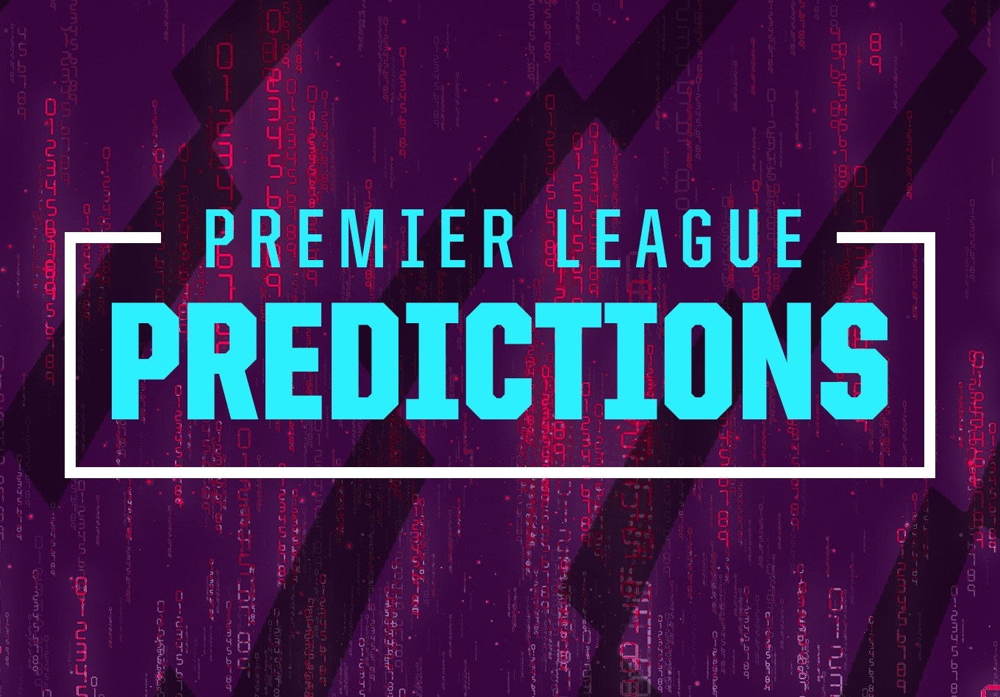

Objective
I am a dependable worker that can operate both independently and in a group. I pick things up quickly and can adjust to any type of work. I am a capable, dependable, and diligent worker that can complete projects both individually and in a group. I have a stellar attendance record and am always on time.
Education
Bachelor of Sceince in Information Technology, ACLC Bukidnon, 2021-2024
Skills
- HTML, CSS, JavaScript
- Python, Java
- SQL,
- AI premiere
Experience
Ai Premiere League Predictions
2022-Present
- Data Analysis: AI algorithms can analyze vast amounts of historical data, including player statistics, team performance, weather conditions, and more. By identifying patterns and trends in the data, AI systems can make predictions about future outcomes.
- Fan Engagement: AI-powered prediction platforms can enhance fan engagement by allowing fans to make predictions about match outcomes and compete with each other in prediction contests.
- Game Strategy Optimization: Coaches and teams can use AI to analyze opponents' playing styles and tendencies, identify strengths and weaknesses, and develop strategies to maximize their chances of winning.
